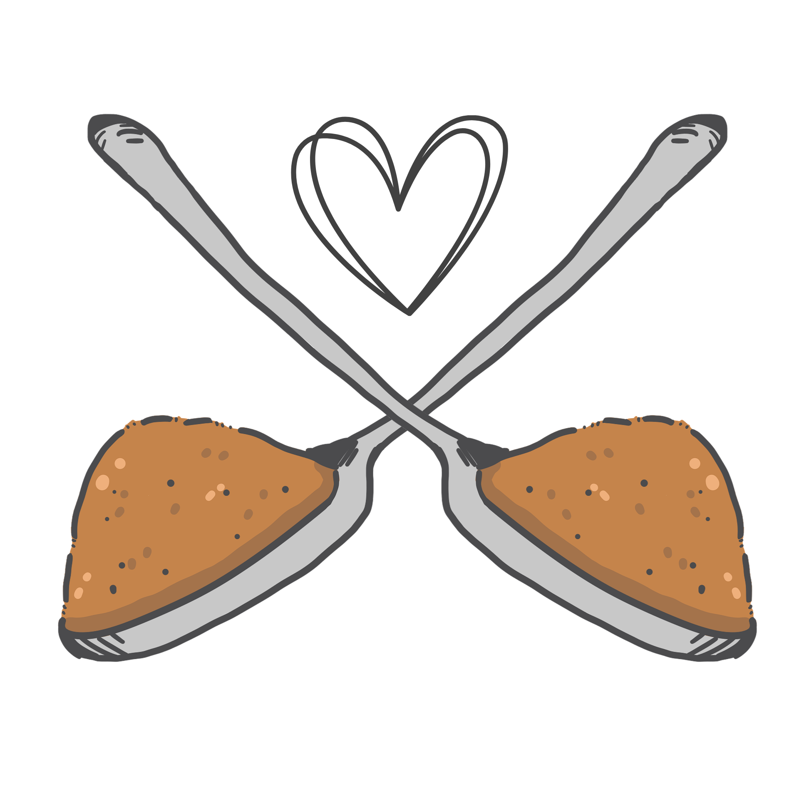
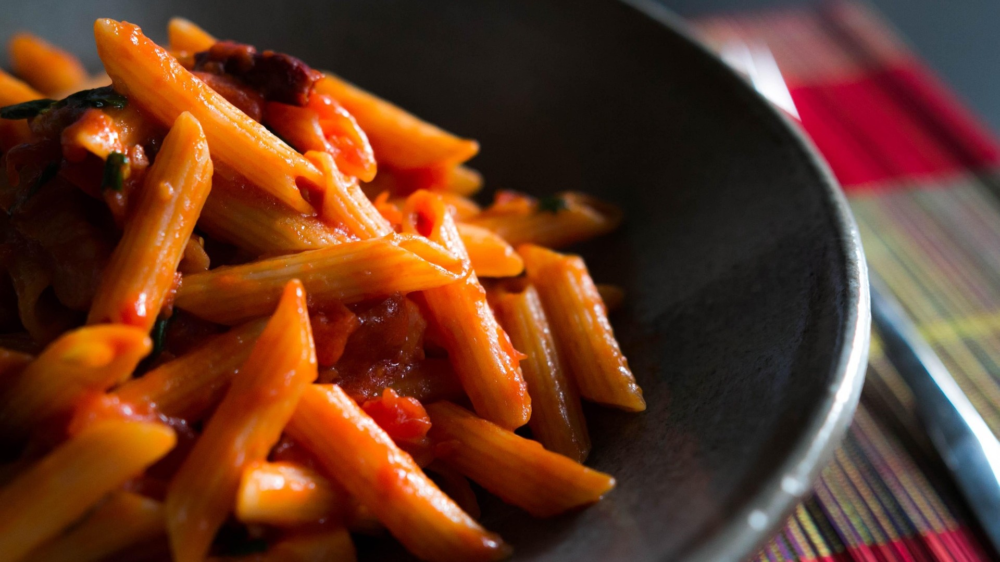
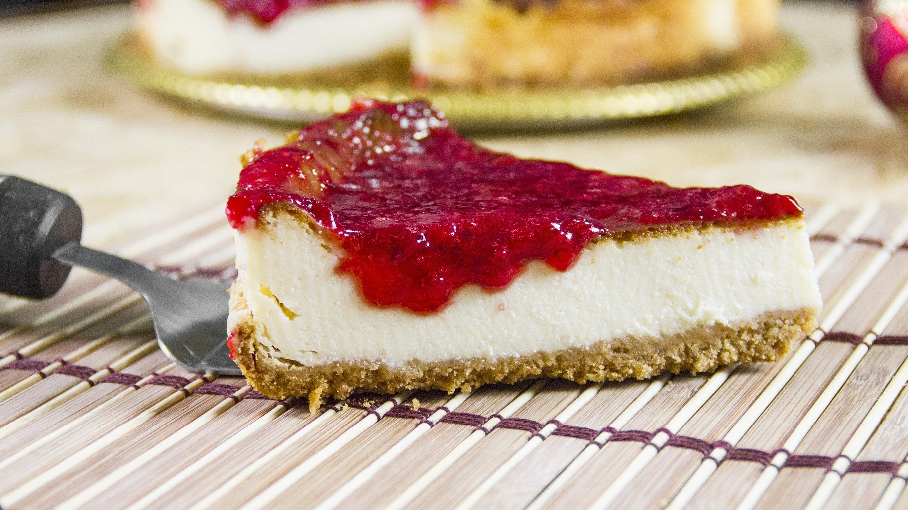
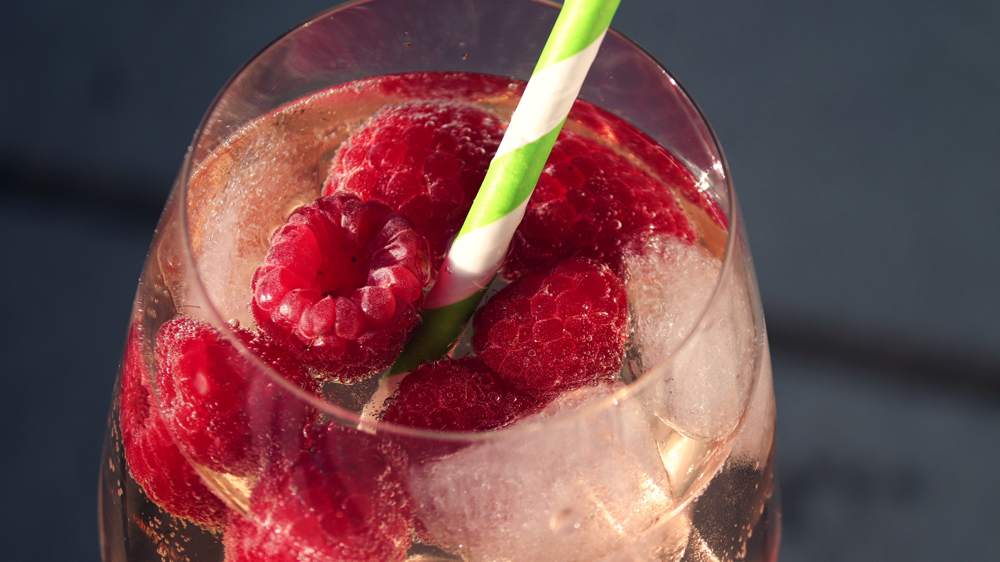
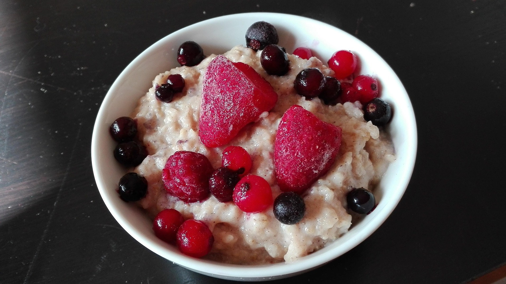

⋆˙˖✧ A Spoonful Of Home ✧˖˙⋆
Welcome to A Spoonful Of Home, the simple home cooked recipe collection aimed to help those
in need of some extra inspiration for cooking without blowing up the spoon drawer!
All of my recipes are thoroughly tested and the instructions are made clear enough
to not leave you second guessing yourself.
* To my dearest best friend who inspired me to make this:
I will not have you eating exclusively out of the oven (or, god forbid, the microwave) any longer!

Spoonometer
Based on the popular
"spoon theory",
the spoonometer tells you how much effort a recipe will take.
Every recipe gets a score between 1-3 spoons based on the amount of
time, steps, tools and mental energy they require, which will help you plan meals
with your energy levels in mind!
- 1/3 spoons is quick and easy.
- 3/3 spoons will take a considerable bit of time and effort.
- 2/3 is a nice in-between.
⋆˙˖✧ Recipes ✧˖˙⋆
I've organised my recipes into four different categories ranging from dinners that will feed one person for days and desserts to top them off, to cocktails and snacks perfect for a nice night-in. Just click a card and get cooking!
DINNERS

DESSERTS

COCKTAILS

SNACKS
